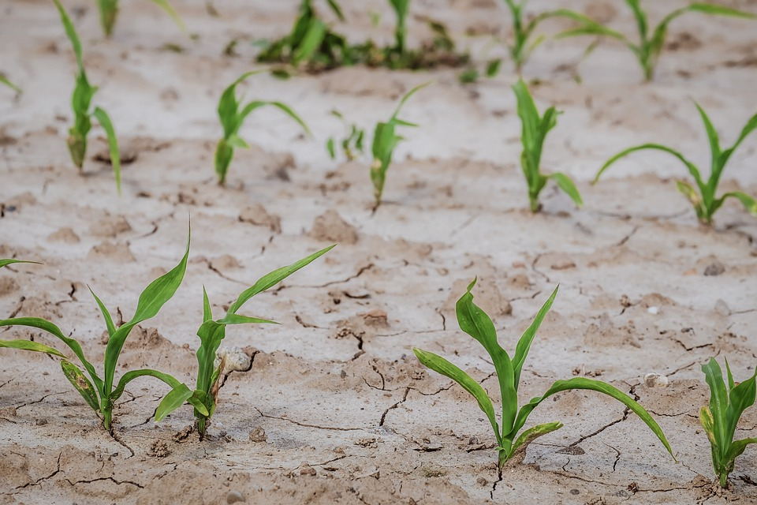

Modelos de cultivo eficiente

Cultivo Hidropônico
O cultivo hidropônico é um método em que as plantas são cultivadas sem solo, em vez disso, são alimentadas por uma solução nutritiva de água e nutrientes. Além disso, o cultivo hidropônico pode ter uma produtividade significativamente maior em comparação com o cultivo convencional.
Agricultura de Precisão
A agricultura de precisão utiliza tecnologias avançadas, como sensores, GPS e drones, para mapear e monitorar as condições das culturas em tempo real. Isso permite uma aplicação precisa de água, fertilizantes e pesticidas apenas onde são necessários, reduzindo o desperdício e maximizando a eficiência dos recursos.

